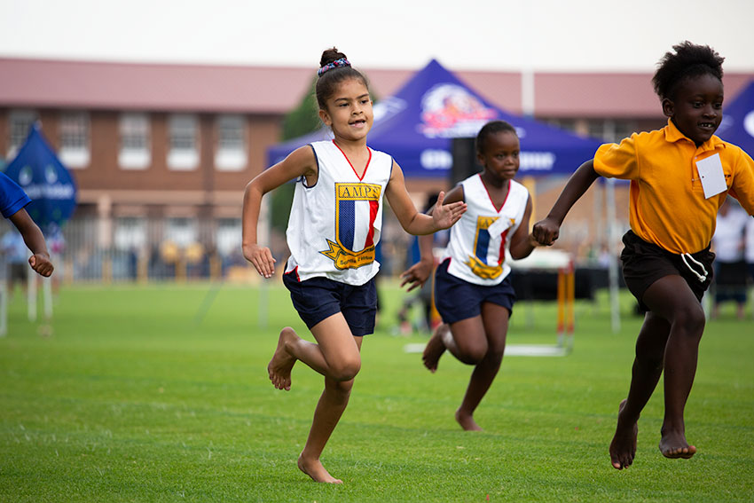

|  |
|
My first achievement is when i was at the primary school, which at that time, I'm 12 years old. I participated in the 4x100m relay race and I won first place. In addition, I also entered the 100m sprint competition and also got the first place where I beat the other runners and finally I was crowned as the sportswomen of the year. |